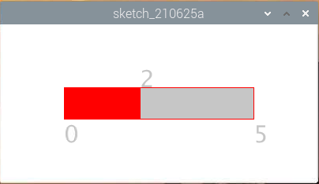

注釈
こんにちは、SunFounderのRaspberry Pi & Arduino & ESP32愛好家コミュニティへようこそ！Facebook上でRaspberry Pi、Arduino、ESP32についてもっと深く掘り下げ、他の愛好家と交流しましょう。
参加する理由は？
エキスパートサポート：コミュニティやチームの助けを借りて、販売後の問題や技術的な課題を解決します。
学び＆共有：ヒントやチュートリアルを交換してスキルを向上させましょう。
独占的なプレビュー：新製品の発表や先行プレビューに早期アクセスしましょう。
特別割引：最新製品の独占割引をお楽しみください。
祭りのプロモーションとギフト：ギフトや祝日のプロモーションに参加しましょう。
👉 私たちと一緒に探索し、創造する準備はできていますか？[ここ]をクリックして今すぐ参加しましょう！
メトロノーム
ここではメトロノームを作成します。 メトロノームは5つのレベルに分けられ、レベルが高いほどブザーの呼び出しが緊急になります。
回路

注釈
ここではアクティブブザーが使用されており、白いステッカーが貼られています。
スケッチ
import processing.io.*;
int level = 0;
int buzzerPin = 17;
int levelRange=5;
Slider mySlider;
void setup() {
size(400, 200);
frameRate(50);
mySlider = new Slider(width * 0.2,height * 0.4,width * 0.8,height * 0.6,0,levelRange,level);
GPIO.pinMode(buzzerPin, GPIO.OUTPUT);
}
void draw() {
background(255);
mySlider.show();
if(level==0){
GPIO.digitalWrite(buzzerPin, GPIO.HIGH);
}else if((frameCount/5) % (levelRange-level+1) ==0){
GPIO.digitalWrite(buzzerPin, GPIO.LOW);
}else{
GPIO.digitalWrite(buzzerPin, GPIO.HIGH);
}
}
void mouseDragged(){
level = mySlider.dragPoint(mouseX,mouseY);
}
class Slider{
float slotPointAX;
float slotPointBX;
float slotPointAY;
float slotPointBY;
float linePoint;
float depth;
int maxRange;
int minRange;
int value;
Slider(float ax, float ay, float bx, float by, int min, int max, int v){
slotPointAX = ax;
slotPointAY = ay;
slotPointBX = bx;
slotPointBY = by;
maxRange = max;
minRange = min;
value = v;
linePoint = slotPointAX;// + map(value, minRange, maxRange, slotPointAX, slotPointBX);
depth = (slotPointBY - slotPointAY)*0.75;
}
void show(){
rectMode(CORNERS);
fill(200);
stroke(255,0,0);
rect(slotPointAX, slotPointAY, slotPointBX, slotPointBY);
fill(255,0,0);
rect(slotPointAX, slotPointAY, linePoint, slotPointBY);
fill(200);
textSize(depth);
text(minRange, slotPointAX, slotPointBY+depth);
text(maxRange, slotPointBX, slotPointBY+depth);
text(value, linePoint, slotPointAY);
}
int dragPoint(float mx, float my){
if(mx>=slotPointAX && mx<=slotPointBX && my>=slotPointAY && my<=slotPointBY){
value = int(map(mx,slotPointAX,slotPointBX,minRange,maxRange));
linePoint = map(value,minRange,maxRange,slotPointAX,slotPointBX);
}
return value;
}
}
原理
ここでは、 Slider クラスを作成し、それを widget として機能させました。
Slider(ax, ay, bx, by, min, max, v)
宣言では、7つのパラメーターで渡す必要があります。
最初の4つのパラメーターはwidgetのサイズを決定し、その後に左上隅の開始点の座標（x1、y1）と右下隅の（x2、y2）が続きます。
最後の3つのパラメーターは、その数値範囲（最小から最大）と初期値を決定します。
これには2つのメソッドがあります。 dragPoint() の効果は、スライダーをドラッグ可能にして、スライダーの現在の位置の値を返すことです。
int dragPoint(float mx, float my){
if(mx>=slotPointAX && mx<=slotPointBX && my>=slotPointAY && my<=slotPointBY){
value = int(map(mx,slotPointAX,slotPointBX,minRange,maxRange));
linePoint = map(value,minRange,maxRange,slotPointAX,slotPointBX);
}
return value;
}
別のメソッド show() は、スライダーを表示することです。 同時に、範囲値と現在値が対応する位置に表示されます。
void show(){
rectMode(CORNERS);
fill(200);
stroke(255,0,0);
rect(slotPointAX, slotPointAY, slotPointBX, slotPointBY);
fill(255,0,0);
rect(slotPointAX, slotPointAY, linePoint, slotPointBY);
fill(200);
textSize(depth);
text(minRange, slotPointAX, slotPointBY+depth);
text(maxRange, slotPointBX, slotPointBY+depth);
text(value, linePoint, slotPointAY);
}
詳細については、 Processing Reference を参照してください。